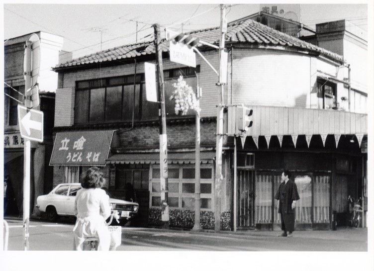
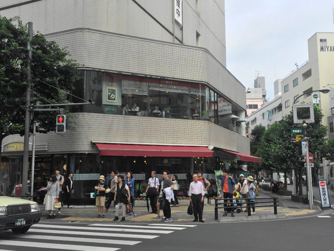

公園通り平和通り交差点


この写真が撮影された場所を特定する手がかりは３つある。
１つ目は信号下の標識にある「吉祥寺駅北口」という文字。
２つ目は、上部やや右手に覗いている「家具の」の文字。1973年の地図によれば、平和通り沿いの現在は「L-Breath 吉祥寺店」がある場所には、「家具の南海屋」があった。
決め手となるのが、左端に写っている「呉服店」という文字。これは「吉祥寺今昔写真館委員会」会長の目黒實さんが会長を務める「ふじや呉服店」であることを、聞き取り調査で確認した。「ふじや呉服店」は公園通りの拡幅工事のために店の姿を変えてしまったが、現在もパルコ１階にあり、右の写真の左端に写っている。つまり、この写真は公園通りと平和通りの交差点を撮影したものだ。
目黒さんによれば、「立喰うどん そば」と書かれているのは「ひかり」という店で、目黒さんが大学に通っていた昭和30年ごろにはあったということだ。「らかんスタジオ」会長の鈴木育男さんはこの店のテレビで力道山のプロレス中継を見たことがあるという（力道山のプロレス中継が熱狂的な人気を誇ったのは昭和30年代）。「ひかり」はその後、不動産屋や郵便局などに業態を変えていったという。「２階の窓の部屋は私が勉強していた場所だ。懐かしいなぁ。この写真ちょうだいよ」と目黒さん。